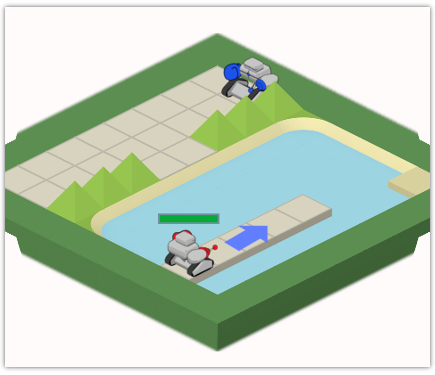

Bienvenue dans le niveau 3 apprenti programmeur !
Dans ce niveau, tu vas te battre contre un robot ennemi ! Quand tu vas commencer à te déplacer, ce dernier va tenir la garde sur le ponton en faisant des allers-retours.

Tu vas devoir te positionner sur sur le bord de la rivière, et attendre que ton adversaire se positionne en face de toi pour attaquer.
Ton robot est capable de détecter les ennemis sur la même ligne que lui avec la procédure “detecterEnnemi”.
Par exemple, pour te déplacer dans la direction de ton ennemi, tu pourras faire par exemple :
a = detecterEnnemi()
si (a!0)
deplacer(a)
finsi
L'instruction si(a!0) permet de vérifier que la variable a n'est pas égale à 0, et donc qu'un ennemi a bien été détecté.